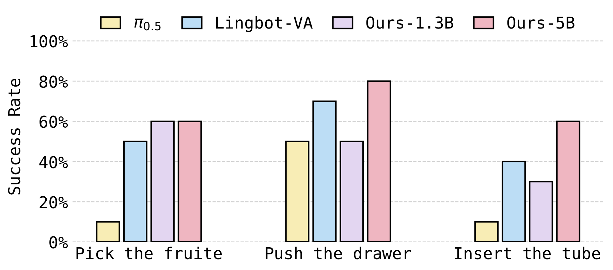
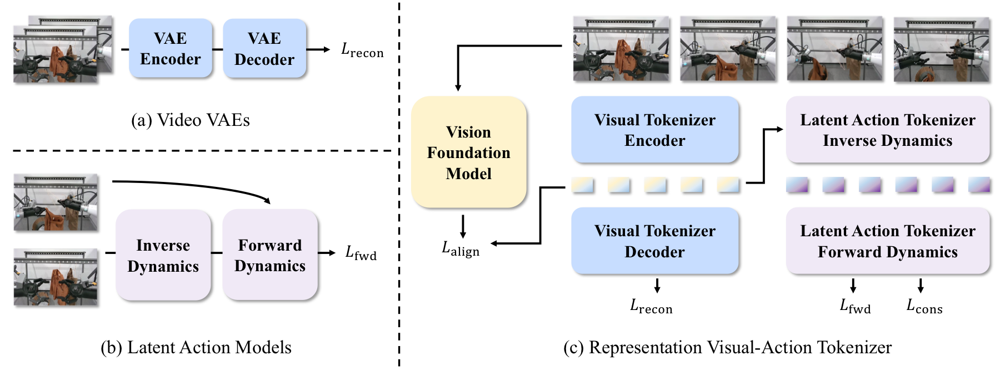
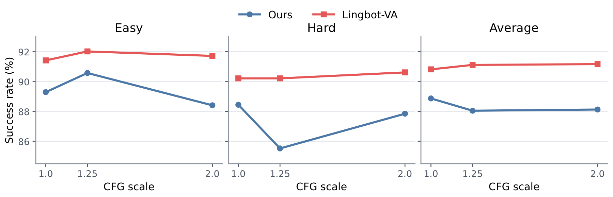
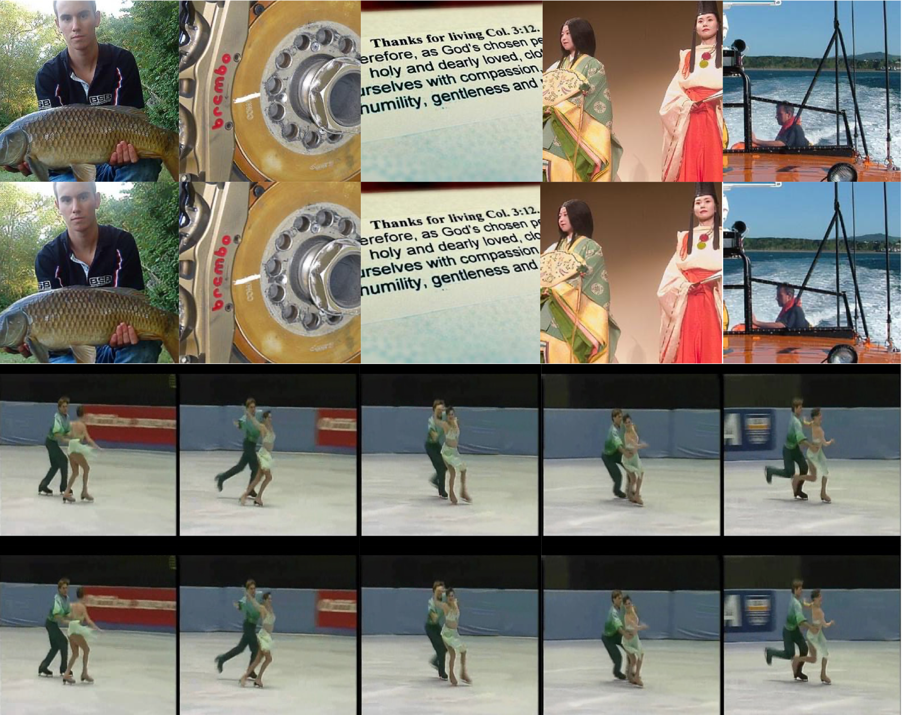
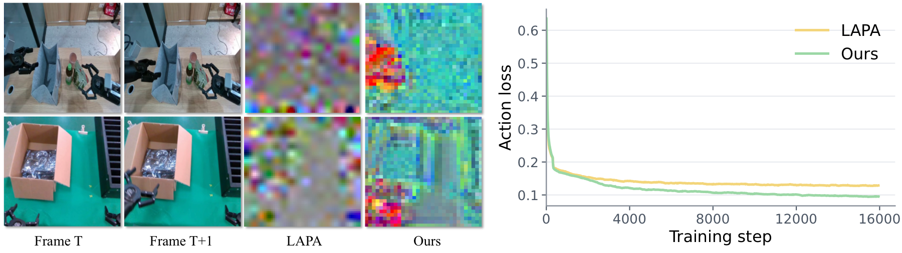

Reconstruction
PSNR, SSIM, rFID, and rFVD for visual reconstruction fidelity.
RepWAM learns semantic visual and action latents in a shared representation space, then models future states and action transitions under language instructions.
On three dual-arm manipulation tasks, RepWAM outperforms existing vision-language-action models (e.g., π0.5) and world-action models (e.g., Motus and Lingbot-VA).

At the core of RepWAM is RepViTok, a representation visual-action tokenizer that learns visual tokens with pixel reconstruction and semantic alignment. On top of this visual latent space, RepViTok learns latent action tokens as compact transitions between visual states.
With paired video and action latents, RepWAM trains a chunk-wise causal world action model to predict future visual states together with the latent actions that connect them.
RepViTok keeps visual states and action-induced scene changes in the same latent space, allowing the WAM to learn manipulation-relevant dynamics rather than only low-level pixel details.

The causal WAM takes language instructions and the first image observation as input, then outputs future visual states and the actions that connect them. It uses a causal diffusion transformer with a video expert and an action expert: attention weights are shared, while feed-forward network weights are expert-specific.
Language instructions and the first image observation.
Video and action experts share attention weights but use separate FFN weights.
Future visual states and actions that connect them.
Without WAN pretraining, RepWAM-5B still surpasses π0.5 and Motus on the 50-task average.
| Metric | π0.5 | Motus | Lingbot-VA | Ours 1.3B | Ours 5B | |||||
|---|---|---|---|---|---|---|---|---|---|---|
| Easy | Hard | Easy | Hard | Easy | Hard | Easy | Hard | Easy | Hard | |
| Backbone pretrained | Yes | Yes | Yes | No | No | |||||
| Average hor=2 | 79.3 | 73.0 | 85.2 | 80.9 | 85.3 | 86.9 | 85.7 | 84.0 | 87.4 | 87.6 |
| Average hor=3 | 78.6 | 67.4 | 85.0 | 84.2 | 89.6 | 90.6 | 92.0 | 85.4 | 88.0 | 90.4 |
| Average 50 tasks | 82.7 | 76.8 | 88.7 | 87.0 | 92.9 | 91.6 | 86.6 | 83.1 | 89.3 | 88.4 |
For a fair comparison, we train the 1.3B WAM from scratch with WAN2.2 VAE and compare it against the same 1.3B setup using RepViTok. RepViTok consistently outperforms WAN2.2 VAE across horizons and difficulty levels.
| Metric | WAN2.2 VAE | RepViTok | ||
|---|---|---|---|---|
| Easy | Hard | Easy | Hard | |
| Average hor=1 | 81.1 | 78.4 | 86.2 | 83.1 |
| Average hor=2 | 75.5 | 73.9 | 85.7 | 84.0 |
| Average hor=3 | 67.2 | 68.0 | 92.0 | 85.4 |
| Average 50 tasks | 78.0 | 76.0 | 86.6 | 83.1 |
PSNR, SSIM, rFID, and rFVD for visual reconstruction fidelity.
gFVD for world-model video rollout quality.
OLS for open-loop action prediction.
PickFruit for closed-loop hardware success.
S = seen AgiBot tasks, U = unseen held-out tasks. ↑ higher is better, ↓ lower is better.
We design two tokenizer baselines for comparison:
Compared with both baselines, RepViTok performs best on world modeling and action transfer.
| Tokenizer | Eval Seen (S) | Eval Unseen (U) | PickFruit ↑ | ||||||
|---|---|---|---|---|---|---|---|---|---|
| gFVD ↓ | PSNR ↑ | SSIM ↑ | OLS ↑ | gFVD ↓ | PSNR ↑ | SSIM ↑ | OLS ↑ | ||
| WAN2.2 VAE | 67.42 | 17.34 | 0.67 | 13.68 | 83.98 | 16.86 | 0.64 | 11.21 | 20% |
| ViTok | 69.23 | 17.21 | 0.68 | 16.29 | 80.14 | 17.19 | 0.67 | 13.81 | 10% |
| RepViTok | 61.01 | 18.47 | 0.70 | 18.82 | 72.91 | 17.72 | 0.67 | 14.15 | 30% |
RepViTok also maintains strong reconstruction quality across ImageNet and UCF101, preserving pixel-level fidelity while retaining semantic details such as faces and text.
| Tokenizer | ImageNet 256 | ImageNet 512 | UCF101 256×17 | UCF101 512×17 | ||||||||
|---|---|---|---|---|---|---|---|---|---|---|---|---|
| rFID ↓ | PSNR ↑ | SSIM ↑ | rFID ↓ | PSNR ↑ | SSIM ↑ | rFVD ↓ | PSNR ↑ | SSIM ↑ | rFVD ↓ | PSNR ↑ | SSIM ↑ | |
| WAN2.2 VAE | 0.50 | 28.16 | 0.87 | 0.20 | 30.48 | 0.90 | 4.28 | 36.61 | 0.98 | 0.68 | 41.45 | 0.99 |
| ViTok | 0.96 | 28.65 | 0.89 | 0.24 | 30.77 | 0.92 | 1.23 | 35.52 | 0.97 | 0.16 | 40.68 | 0.98 |
| RepViTok | 0.80 | 28.90 | 0.89 | 0.23 | 31.00 | 0.92 | 1.09 | 36.03 | 0.97 | 0.16 | 41.12 | 0.98 |
RepWAM performs best at video CFG scale 1.0 on RoboTwin 2.0, so inference can avoid the extra unconditional video branch and run faster.

RepViTok preserves fine-grained details well, including human faces, object boundaries, and text regions.

We compare two-stage training with two baselines:
Two-stage latent-action training achieves the best world-modeling, action-prediction, and real-robot results among the ablations.
| Training | Eval Seen (S) | Eval Unseen (U) | PickFruit ↑ | ||||||
|---|---|---|---|---|---|---|---|---|---|
| gFVD ↓ | PSNR ↑ | SSIM ↑ | OLS ↑ | gFVD ↓ | PSNR ↑ | SSIM ↑ | OLS ↑ | ||
| w/o latent actions | 61.01 | 18.47 | 0.70 | 18.82 | 72.91 | 17.72 | 0.67 | 14.15 | 30% |
| Joint Pred | 94.25 | 15.24 | 0.61 | 18.52 | 98.77 | 15.09 | 0.55 | 15.22 | 20% |
| Two Stages | 48.23 | 22.86 | 0.75 | 19.87 | 58.83 | 19.93 | 0.74 | 16.98 | 50% |
RepViTok latent actions also transfer better than LAPA to real robot action decoding, yielding lower inverse-dynamics action loss.

If you find our work useful, please consider citing us.
@article{wang2026repwam,
title = {RepWAM: World Action Modeling with Representation Visual-Action Tokenizers},
author = {Wang, Junke and Zhang, Qihang and Yang, Shuai and Luo, Yiming and Shen, Yujun and Wu, Zuxuan and Jiang, Yu-Gang and Xu, Yinghao},
year = {2026}
}